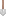
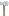
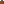
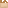
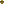
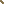
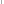

Items.
Here you will find all the information about the items in the game.
| name | icon | short description | id | Method of obtaining |
| Sniper Rifle | The main weapon of the entire game. | sniper_rifle | ||
| Magazine | Ammunition for a sniper rifle. | magazine | ||
| Shovel |  | shovel | ||
| Axe |  | A tool for chopping down trees | axe | |
| Flint And Steel | Used to ignite various flammable items. | flint_and_steel | ||
| Backpack | A convenient storage for items | backpack | ||
| Cap | A decoration created for testing clothing. | cap | ||
| Lantern | lantern | |||
| Board | Processed wood | board | ||
| Box | Storage for items | box | ||
| Plane | Used for processing wood. | plane | ||
| Brick Block | A sturdy block for building houses and furnaces. | brick_block | ||
| Brick | Building material | brick | ||
| Furnace | The main component of a furnace. Requires a complete structure to use. | furnace | ||
| Building Mortar | Use it on 2 finished bricks to create a brick block. | building_mortar | ||
| Bunny Body | Nutritious meat that can be cooked in a kettle. | bunny_body | ||
| Bunny Fur | Soft bunny fur. Can be used in clothing production. | bunny_fur | ||
| Clay |  | "Sticky soil. Used for creating building materials. | clay | |
| Raw Brick | Cook it over a campfire to turn it into a finished brick. | raw_brick | ||
| Cotton Boll | Can be processed into fabric on a loom. | cotton_boll | ||
| Cotton Seed | Can be planted in a small soil block and produce fruit from the plant. | cotton_seed | ||
| Cloth | The main material for making clothing. | cloth | ||
| Cloth block | A block made from cloth. | cloth_block | ||
| Cut Grass | You can obtain this by cutting grass. | cut_grass | ||
| Hay | Dried grass. Used for making rope. | hay | ||
| Gutter | Helps collect water in the morning and pump it out of a jar. | gutter | ||
| Jar | Stores water and other various liquids. | jar | ||
| Kettle | Used for cooking food over a campfire. | kettle | ||
| craftboard | Used for creating new advanced items. | craftboard | ||
| loom assembly kit |  | Can be used to assemble a loom with the help of a wrench. | main_loom_block | |
| Limestone | limestone | |||
| Quicklime | quicklime | |||
| Slaked lime | Obtained in the morning using a gutter placed on a block of quicklime. | slaked_lime | ||
| Acorn |  | You can grow a small tree from it if you plant it in the soil. | acorn | |
| Rope |  | rope | ||
| Stick Block | stick_block | |||
| Stick | stick | |||
| Ash | A product of wood combustion | ash | ||
| Raspberry | A level 1 nutritious substance. | raspberry | ||
| Tin Can | A level 2 nutritious substance. | tin_can | ||
| Used Tin Can | A useful source of aluminum. | used_tin_can | ||
| Wrench | Can be used to assemble various structures, for example, a loom from its assembly kit. | wrench | ||
| Aluminum | A lightweight useful material | aluminum | ||
| Scrap | It can be used to make a steel plate by smelting it in a furnace. | scrap | ||
| Steel plate | A strong material from which various tools can be made. | steel_plate | ||
| Needle |  | A tool that can be used to sew various items. | needle | |
| Nail | An item used for fastening wood. | nail |